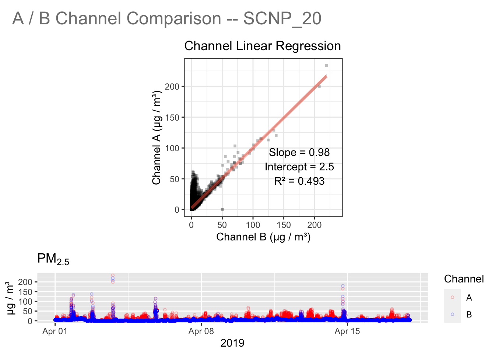
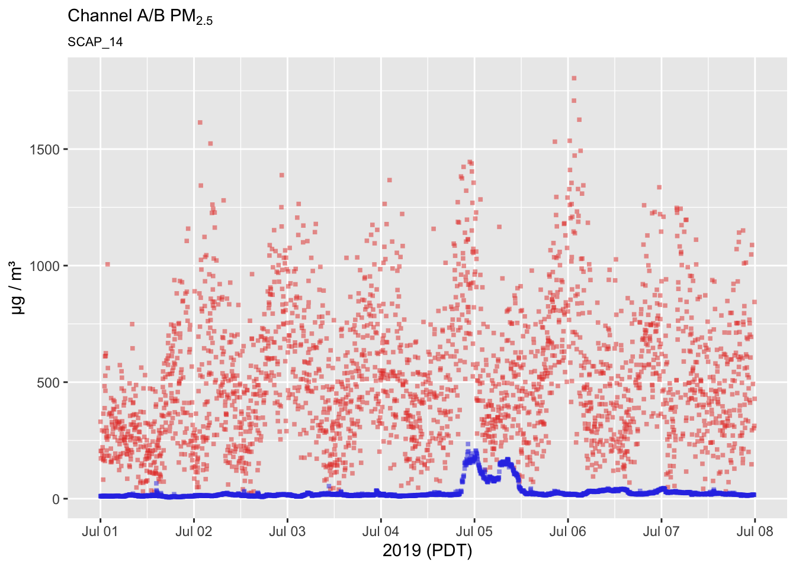
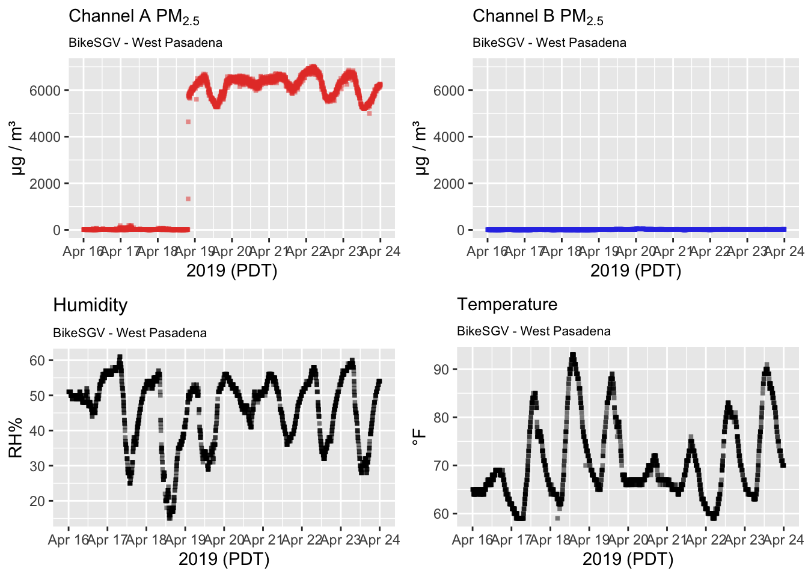
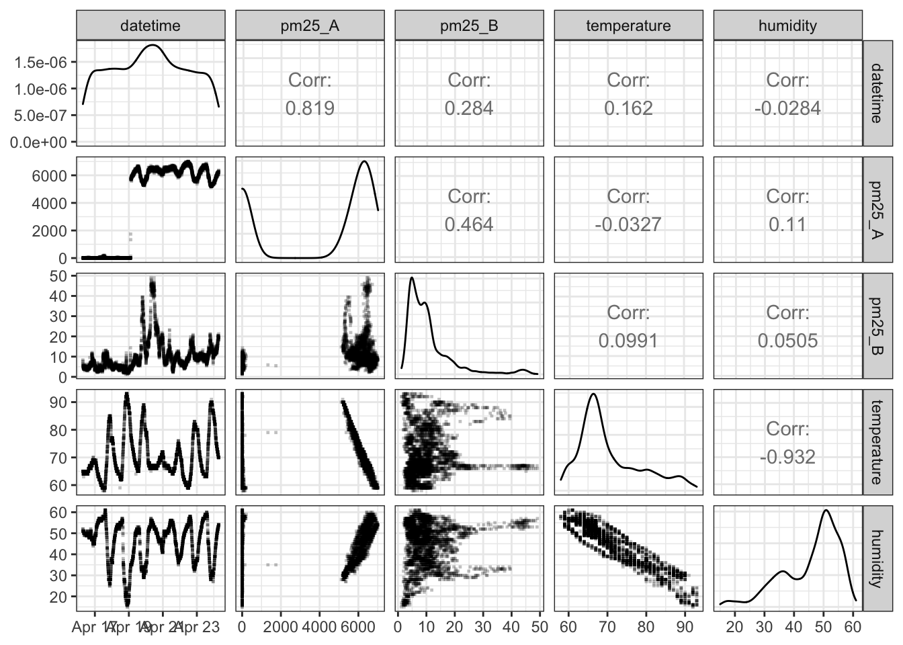
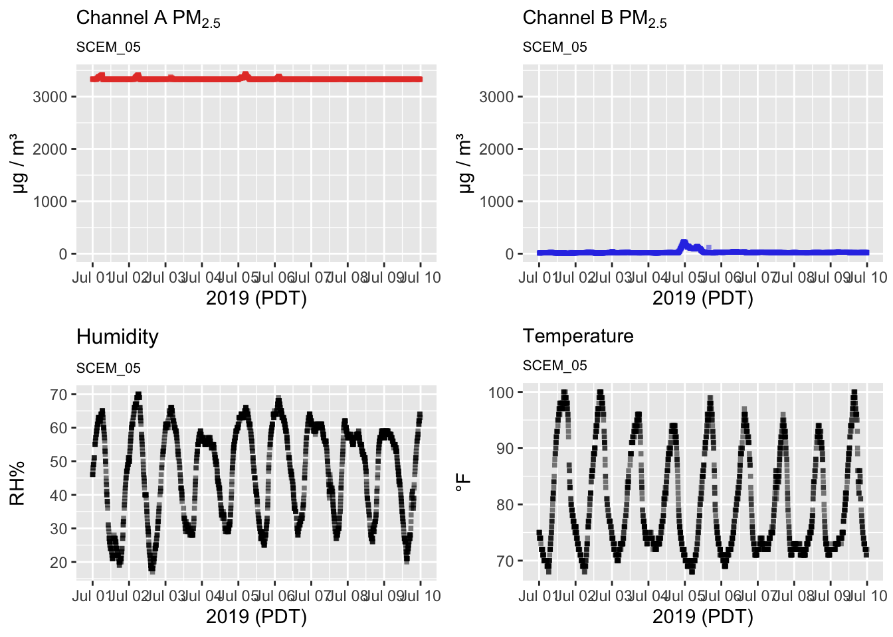
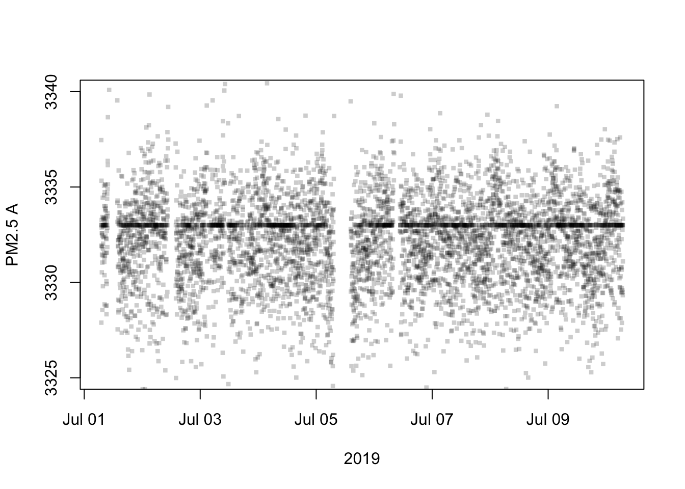
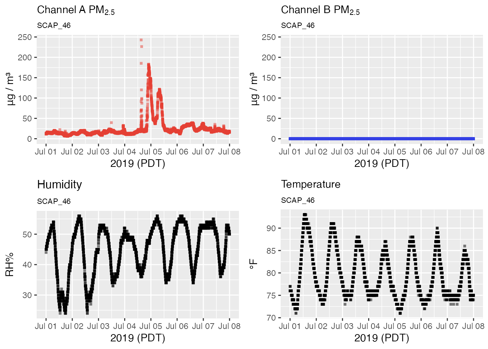

PurpleAir Failure Modes
Mazama Science
7/09/2019
Source:vignettes/articles/purpleair_failure_modes.Rmd
purpleair_failure_modes.RmdThis vignette examines different failure modes we have found in the data from PurpleAir (PA-II) sensors.
Channel A Moderate Noise
The A channel readings are moderately more noisy than those of the B channel.

Channel A here often measures above B at the same moment in time, as shown by the scatterPlot with the vertical clump near the origin instead of along the angled regression line.
Channel A Extreme Noise
Channel A readings show extreme levels of noise.
## Warning: Removed 1317 rows containing missing values (geom_point).
## Warning: Removed 1317 rows containing missing values (geom_point).
While a small amount of noise is natural when measuring particulate matter, sometimes the noise level goes far beyond what is allowable. Here we see the A channel looks like a cloud of points compared to the much more consistent channel B. A faint wave pattern can still be identified, however.
Channel A Jumps
Channel A shows a sudden, but short-lived jump in PM2.5 readings.
## Warning: Removed 1996 rows containing missing values (geom_point).
## Warning: Removed 1996 rows containing missing values (geom_point).
This plot shows a jump that seems to retain a consistent wave pattern for a while rather than just being random noise. This could possibly be a temporary mix of the “Matches Humidity” failure mode.
Channel A Matches Humidity
The A channel PM2.5 sensor starts reflecting humidity readings instead of PM levels.

You can see in the multiplot the clear disconnect between the two PM2.5 channels. Both sensors appear to agree with each other until channel A suddenly jumps into the thousands and starts tracing the trend of the humidity data (plotted directly below).

A glance at these scatterPlots gives a us another look at just how uncorrelated the A and B channels are, while the relationships for channel A with temperature and humidity are abnormally well-defined. It’s actually not very clear which of the auxillary sensors the A channel is reflecting since temperature and relative humidity are naturally correlated themselves.
A more in-depth analysis of this issue is provided in local_examples/bikesgv_story.Rmd .
Channel A Magic Number
The A channel is centered around a particular level but is sometimes affected by humidity when it goes past a certain threshold.

The multiplot shows the A and B channels have very different readings, similar to the “Matches Humidity” failure mode. The strange thing here though is that the A channel is mostly flat, with only the occasional spike when the humidity measures very high. Let’s see what number it is centered around:
plot(pat$data$datetime, pat$data$pm25_A,
ylim = c(3325, 3340),
pch = 15, cex = 0.6, col=adjustcolor("black", 0.2),
xlab = "2019", ylab = "PM2.5 A")
temp <- table(as.vector(pat$data$pm25_A))
print(paste0("Mode value: ", names(temp)[temp == max(temp)]))## [1] "Mode value: 3333"Although there is plenty of noise between 3325 and 3340 ug/m3, a very clear, very straight line of points is visible at exactly 3333.0 ug/m3.
Channel B is Zero
Channel B measures no particulate matter at all.
## Warning: Removed 673 rows containing missing values (geom_point).## Warning: Removed 675 rows containing missing values (geom_point).## Warning: Removed 673 rows containing missing values (geom_point).
## Warning: Removed 673 rows containing missing values (geom_point).
## # A tibble: 6 x 3
## datetime pm25_A pm25_B
## <dttm> <dbl> <dbl>
## 1 2019-07-01 07:01:00 11.6 0
## 2 2019-07-01 07:02:00 13.6 0
## 3 2019-07-01 07:03:00 12.6 0
## 4 2019-07-01 07:05:00 11.8 0
## 5 2019-07-01 07:06:00 12.2 0
## 6 2019-07-01 07:07:00 11.2 0In this case one may wish to work with the A channel data only